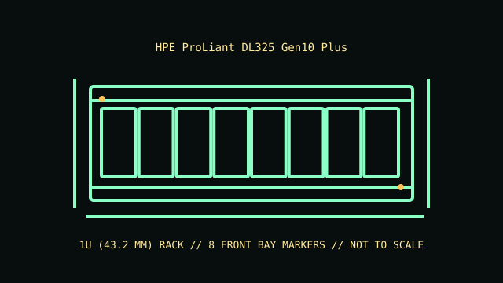

[ MODEL IDENTIFICATION // PROLIANT DL325 GEN10 PLUS // 1U SINGLE-SOCKET SERVER ]
HPE ProLiant DL325 Gen10 Plus
1U (43.2 mm); 43 × 434 × 826 mm (H × W × D) for the short-chassis form; long-chassis / option configurations differ. Allow extra depth for rails, cable arms and connectors.

REVISION CAVEAT: SFF/LFF chassis, long/short depth and storage option kits differ. Confirm the product number and backplane label before selecting carriers, controller cables or rails.
Specifications & fit
| Catalog subcategory | Rack server enclosures |
|---|---|
| Model / board and backplane | HPE single-socket AMD EPYC system board with front drive backplane/cage options; SAS/SATA/NVMe support depends on installed backplane, controller and chassis variant. |
| Rack height / dimensions / rails | 1U (43.2 mm); 43.2 × 434.6 × about 826 mm (H × W × D) for the short-chassis form; long-chassis / option configurations differ. Allow extra depth for rails, cable arms and connectors. HPE rail kit options are ordered for the DL325 Gen10 Plus and compatible rack type; check rail depth, square/round-hole fit and optional cable-management-arm clearance. |
| Power supply | Redundant HPE Flex Slot hot-plug PSU options, commonly 500 W, 800 W or 1600 W classes subject to generation and configuration. Use compatible matched modules sized for the CPU and storage load. |
| Drive bays | Front storage chassis options include SFF and LFF hot-plug configurations, with platform options up to 24 SFF or 12 LFF bays; exact cage/backplane and NVMe support depend on chassis and controller. |
| Expansion / risers | PCIe Gen4 riser options provide model-specific expansion slots; supported slot count and GPU/card fit are limited by chassis, processor and riser configuration. |
| Cooling | Redundant hot-plug system fans; count and performance grade vary with chassis and installed CPU/storage options. Maintain the DL325 Gen10 Plus air baffle and matched fan population. |
| Compatibility | The DL325 Gen10 Plus is a single-socket platform: system board, EPYC generation, DIMMs, backplane, risers, Flex Slot PSUs and rails must match its generation and chassis. Do not assume fit with DL325 Gen10 or later Plus V2 parts. |
| Revision identification | SFF/LFF chassis, long/short depth and storage option kits differ. Confirm the product number and backplane label before selecting carriers, controller cables or rails. |
Compatibility & preservation notes
The DL325 Gen10 Plus is a single-socket platform: system board, EPYC generation, DIMMs, backplane, risers, Flex Slot PSUs and rails must match its generation and chassis. Do not assume fit with DL325 Gen10 or later Plus V2 parts.
HPE rail kit options are ordered for the DL325 Gen10 Plus and compatible rack type; check rail depth, square/round-hole fit and optional cable-management-arm clearance. Always use the correct lifting procedure for the complete installed unit and disconnect power before service.
- Record the full model/product number, serial label, board and backplane identifiers, installed risers, PSU labels and rail-kit part number before disassembly.
- For rack servers, verify exact generation, bay/backplane, controller, riser, fan and PSU compatibility; equal rack height does not establish parts compatibility.
- Keep drive carriers, blanks, shrouds, brackets and fasteners labeled with their original chassis and position. Measure the complete chassis, rails and cable arm before rack installation.
Manufacturer manuals & product specifications
- HPE ProLiant DL325 Gen10 Plus QuickSpecsManufacturer documentation for this exact model family; verify the machine/product number and document revision.
- HPE ProLiant DL325 Gen10 Plus — HPE QuickSpecs document PDFManufacturer documentation for this exact model family; verify the machine/product number and document revision.
Published dimensions and option maxima vary by build. Check the specific product number and measure the specimen before restoration, shipping or installation.